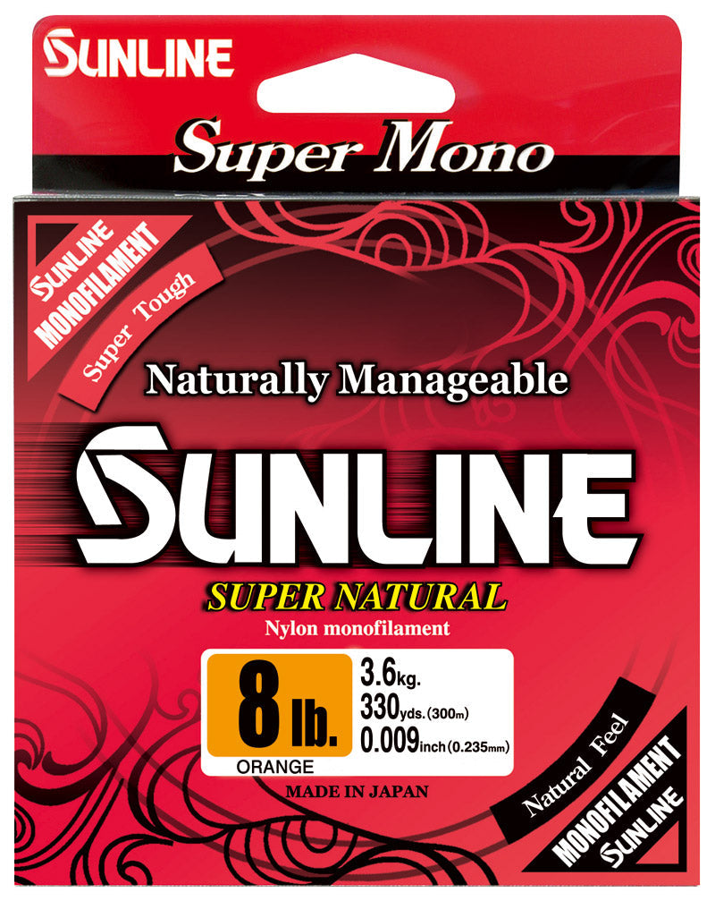

Sunline Super Natural Monofilament
Diameter chart, reel capacity & backing guide

Super Natural is Sunline's nylon monofilament, available in retail and bulk lengths. The standard 330- and 660-yard listings cover 4-30 lb; the 3,300-yard listing extends to heavier strengths. That broad range includes very different line diameters, not one universal mono setup.
- Construction
- Nylon monofilament
- Listed strengths
- 4-80 lb
- Line type
- Monofilament main line
Is Super Natural right for your setup?
Consider Super Natural for a straightforward mono main line or as backing beneath another working line. For main-line use, match diameter to the rod, reel, and presentation. For backing, calculate the space it occupies using its own diameter rather than treating every 10 lb mono as the same thickness.
How much Super Natural will fit?
Calculated estimates, not measured fills. Stop at the reel manufacturer's fill level even if some line remains.
Sunline Super Natural Mono diameter chart
Current Sunline America 330-, 660-, and 3,300-yard sources. Heavy strengths are bulk-only; color availability varies.
| Strength | Inches | mm | Spools (yd) |
|---|---|---|---|
| 0.0065 | 0.165 | 330, 660, 3300 | |
| 0.0081 | 0.205 | 330, 660, 3300 | |
| 0.0093 | 0.235 | 330, 660, 3300 | |
| 0.0102 | 0.260 | 330, 660, 3300 | |
| 0.0112 | 0.285 | 330, 660, 3300 | |
| 0.0122 | 0.310 | 330, 660, 3300 | |
| 0.013 | 0.330 | 330, 660, 3300 | |
| 0.0146 | 0.370 | 330, 660, 3300 | |
| 0.0159 | 0.405 | 330, 660, 3300 | |
| 0.0171 | 0.435 | 330, 660, 3300 | |
| 0.0185 | 0.470 | 3300 | |
| 0.0205 | 0.520 | 3300 | |
| 0.0224 | 0.570 | 3300 | |
| 0.0244 | 0.620 | 3300 | |
| 0.028 | 0.700 | 3300 |
Choosing your Super Natural strength
Super Natural 8 lb is .0093 inch in the current chart and 10 lb is .0102 inch. Those are relatively small physical diameters, but their labels are not a guarantee of compatibility with every spinning reel or lure.
The heavier 35-80 lb entries are verified from the bulk listing. They are not ordinary light spinning choices. Their inclusion documents available specifications, not a recommendation to put heavy mono on a small reel.
If changing from another brand's mono, compare exact diameters before reusing your previous fill amount. A matching strength label can still leave more or less space on the reel.
This is a specification-based setup guide, not a hands-on Super Natural performance test.
Want a guided recommendation?
Continue in the Setup WizardSame pound test, different diameters
At your selected strength
Loading diameter comparisons...
What changes with another line?
Nearby diameters in the line database
| Line | Strength | Inches | Difference |
|---|---|---|---|
| Loading line database... | |||
Backing, working line & leaders
Choose main line or backing deliberately
Super Natural can occupy the whole spool or sit underneath a different working line. In a two-line plan, keep the two diameters separate and include enough working line above the connection.
Check color and length together
The manufacturer assigns colors by strength and package length. The guide combines verified lengths across colors; it does not promise every color exists in every combination.
Use the current numeric chart
Some manufacturer package artwork rounds the inch value more coarsely than the current chart. This guide uses the chart's more precise entry. Check your own package if its specifications differ.
How Much Fits on These Reels?
Estimated full-spool capacity for the Super Natural strength selected above, with no backing. These are calculated examples, not physical tests or recommendations for every pairing.
Loading capacity estimates...
Super Natural questions, answered
Is Super Natural fluorocarbon?
No. This product is nylon monofilament. Use a mono capacity reference when entering reel specifications manually.
Are 330 yards and 330 meters the same?
No. This guide follows the US yard-based listing. A meter-labelled imported package needs its length converted before comparing it with a yard-based fill plan.
Can a 3,300-yard spool fill multiple reels?
Yes, when enough usable line remains for the planned fills. Calculate each reel separately and keep track of the line removed; the bulk spool label describes its original amount.
Specifications & sources
Specifications checked 2026-09-13. Manufacturer chart inch/mm pairs transcribed separately; assigned SKU variants verify strength-specific package lengths. Check the actual package when buying older or imported stock. Product imagery identifies the model, not every selectable strength.
Calculations use the catalog's listed inch diameters. Published inch and millimeter values may differ slightly because of rounding.
- Official Sunline Super Natural specifications 1 Manufacturer material, strength, diameter, and package evidence.
- Official Sunline Super Natural specifications 2 Manufacturer material, strength, diameter, and package evidence.
- Official Sunline Super Natural specifications 3 Manufacturer material, strength, diameter, and package evidence.
- Manufacturer diameter chart 1 Published numeric diameter pairs checked visually against the catalog.
- Manufacturer diameter chart 2 Published numeric diameter pairs checked visually against the catalog.